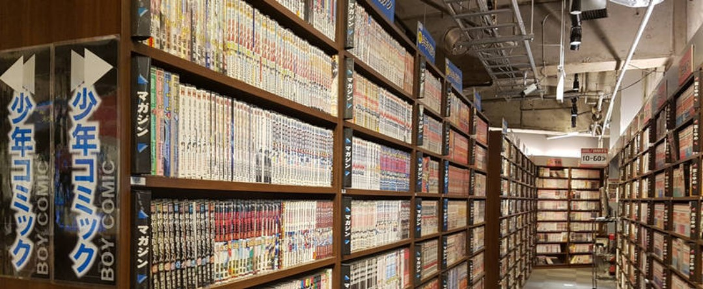

Comic & Internet Coffee
Experience a new world
ルーベン・トレホ

Experience a new world
ルーベン・トレホ
Somos una empresa que ofrece diversos servicios que nos diferencian de la competencia, dando la confianza de que nuestras instalaciones son las adecuadaas.
Nuestro proposito a alcanzar, es siempre ser la primera opcion al cliente, en cuanto a comodidad, entretenimiento y paz, para realizar diversas actividades en un ambiente agradable.
Soy el tipo de persona que trata de resolver problemas de la forma mas sencilla si la situacion lo requiere, mientras que con problemas complejos doy toda mi atencion para no dejar ningun hueco, podria decirse que guardo mi verdadera fuerza para situaciones que lo requieran.
En cuanto a mis gustos, el tipo de musica que suelo escuchar, es rock alternativo, heavy metal, death metal, hardcore, post punk ruso, pop, cumbia, aunque el trap y sus derivados me disgustan.
Mi pasatiempo son los videojuegos, el anime, las series y peliculas, siendo bastante fanatico de la ciencia ficcion, me gustan las peliculas de Star Wars (menos la tercera trilogia, es demasiado mala). En videojuegos, juego en pc, y soy demasiado variado en cuanto a que juego, disfruto tanto los juegos single player como multiplayer. En cuanto anime, colocaria a another como uno de mis favoritos, junto con black clover, danshi koukousei no nichijou, asobi asobase, cowboy bebop, evangelion, devilman crybaby, sakura cardcaptor, clannad, shigatsu wa kimi no uso, grisaia, cyberpunk edgerunners, etc.
"Declarar tus sentimientos no es algo sencillo. Pasas días angustiados, y aún así no puedes hacerlo. Las palabras se atoran en tu garganta y no puedes obligarlas a salir. Creo que esos sentimientos se merecen una respuesta."